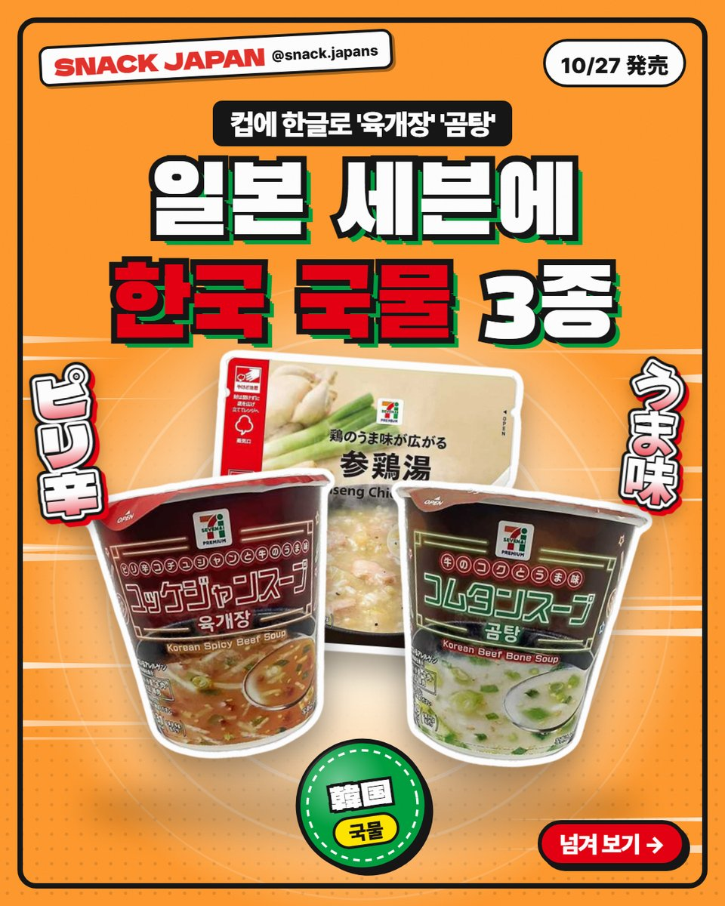
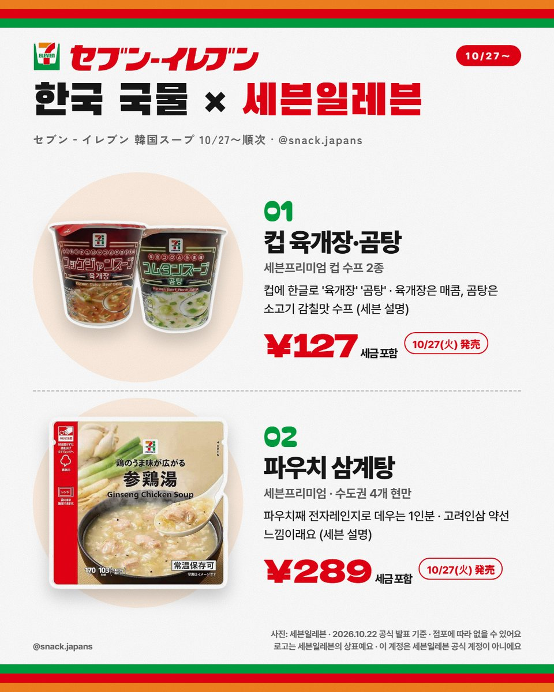
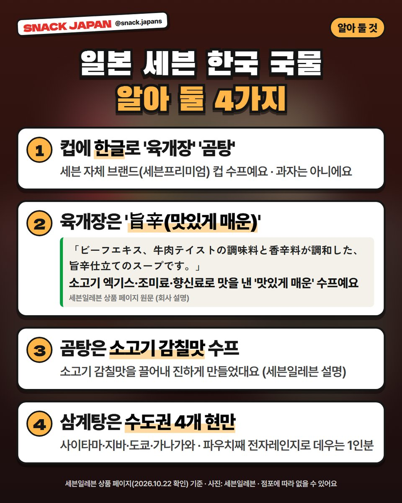
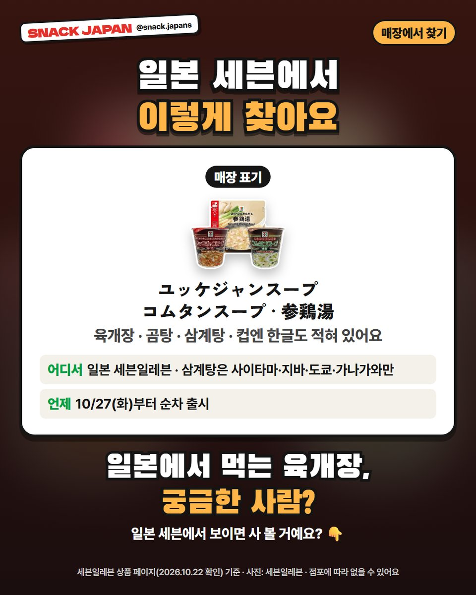

일본 세븐일레븐 육개장·곰탕·삼계탕 출시, 컵에 한글이 적힌 한국 국물
10/27부터 일본 세븐일레븐에 한국 국물 3종이 순차 출시! 컵에 한글로 '육개장' '곰탕'이 적혀 있어요.
일본 편의점에서 '육개장'이라는 한글을 보게 될 줄이야! 🇰🇷
일본 세븐일레븐에
육개장·곰탕·삼계탕이 한꺼번에 나와요.
과자는 아니지만, 이건 소개 안 할 수가 없죠?
세븐일레븐 상품 페이지 기준으로 정리해 볼게요!

1. 10/27부터 순차 출시!
- 파는 곳: 일본 세븐일레븐
- 컵 육개장·곰탕: 일본 전국
- 파우치 삼계탕: 사이타마·지바·도쿄·가나가와만
- 출시: 10/27(화)부터 순차
- 가격: 사진 카드에 정리해 뒀어요

2. 컵에 한글로 '육개장' '곰탕'
세븐 자체 브랜드(세븐프리미엄) 컵 수프인데
컵에 한글로 '육개장', '곰탕'이라고 적혀 있어요.
- 육개장: '맛있게 매운(旨辛)' 수프래요 (세븐일레븐 설명)
- 곰탕: 소고기 감칠맛을 끌어낸 진한 수프래요 (세븐일레븐 설명)

3. 삼계탕은 수도권에서만
파우치째 전자레인지로 데우는 1인분 삼계탕이에요.
고려인삼 약선 느낌을 살렸대요 (세븐일레븐 설명).
다만 사이타마·지바·도쿄·가나가와 매장에서만 팔아요.
오사카·후쿠오카 여행이라면 못 볼 수도 있어요!

4. 매장에서 찾는 법
- 육개장: ユッケジャンスープ
- 곰탕: コムタンスープ
- 삼계탕: 参鶏湯
- 점포에 따라 없을 수 있어요
총평
- 기준: 세븐일레븐 상품 페이지, 10월 22일 확인
- 참고: 과자가 아닌 인스턴트 수프예요. 맛은 직접 먹어 보지 않아서 회사 설명만 옮겼어요
- 추천: 일본에서 한국 음식이 어떻게 나오는지 궁금한 분, 도쿄 근처 여행하는 분
일본에서 먹는 육개장, 궁금하지 않아요?
일본 세븐에서 보이면 사 볼 건지 댓글로 알려 주세요 🍲